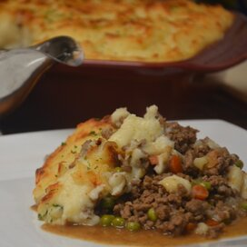

Shepard Pie

Description
This Traditional Shepherd's Pie is a British comfort food classic loved by all. This is a classic recipe using ground lamb cooked with vegetables and Guinness for an extra flavor boost, topped with fluffy mashed potato and baked. The same recipe using
ground beef is called Cottage Pie.
Image result shepherd's pie, common and inexpensive British dish originating from the sheep country in Scotland and northern England. It is a baked meat pie made with minced or diced lamb and topped with a thick layer of mashed potatoes.
Ingredients
- 4 large potatoes, peeled and cubed
- 1 table spoon butte/li>
- 1 tablespoon finely chooped onin
- ¼cup shreddd cheddar cheese
- salt and pepper to taste
- 5 carrots chopped
- 1 tablespoon vegetable oil
- 1 onin, chooped
- 1 pound lean ground beef
- 2 tablespoons all-purpose flour
- 1 tablespoon ketchup
- ¾ cup beef broth
- ¼cup shredded cheddar cheese
Steps
- Bring a large pot of salted water to a boil. Add potatoes and cook until tender but still firm, about 15 minutes. Drain and mash. Mix in butter, finely chopped onion and 1/4 cup shredded cheese. Season with salt and pepper to taste; set aside.
- Bring a large pot of salted water to a boil. Add carrots and cook until tender but still firm, about 15 minutes. Drain, mash and set aside. Preheat oven to 375 degrees F (190 degrees C.)
- Heat oil in a large frying pan. Add onion and cook until clear. Add ground beef and cook until well browned. Pour off excess fat, then stir in flour and cook 1 minute. Add ketchup and beef broth. Bring to a boil, reduce heat and simmer for 5 minutes.
- Spread the ground beef in an even layer on the bottom of a 2 quart casserole dish. Next, spread a layer of mashed carrots. Top with the mashed potato mixture and sprinkle with remaining shredded cheese.
- Bake in the preheated oven for 20 minutes, or until golden brown.
Home